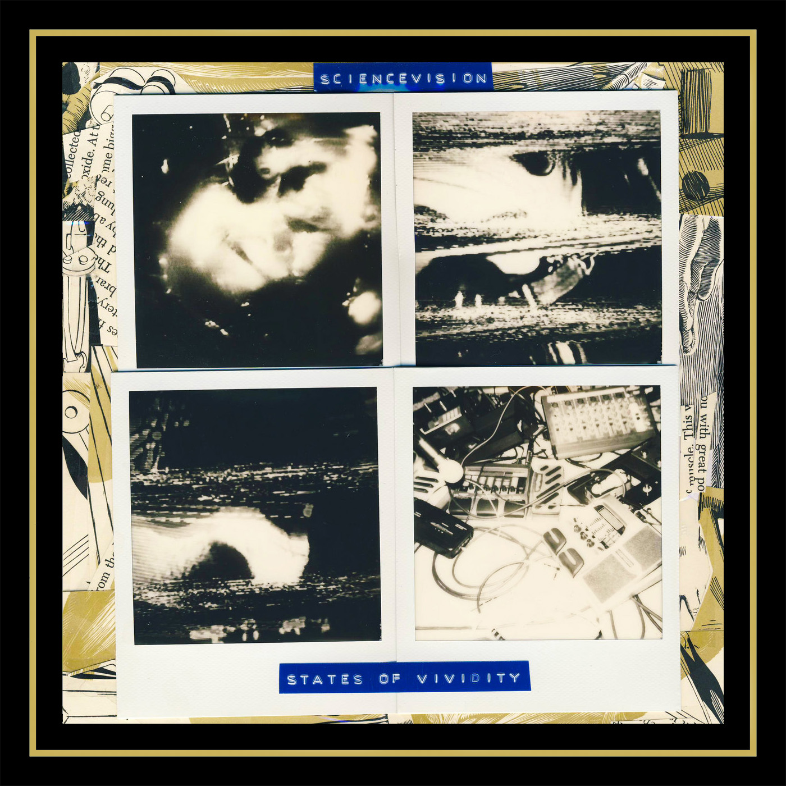

sciencevision - states of vividity
catalog: ar-003
year: 2016
format: 2 x cd
This double album splits Sciencevision into two bands - one led by Adam Hess’s songwriting and the other by Brandon Dunlap's studio experiments. All of the material was recorded to tape and any overdubs were done by bouncing between tape decks and letting the sound mutate with every pass. A highlight was recording “Merlot” with a drum set built out of metal/glass and shattering it while the tape rolled. Limited to 25 hand-stamped copies, each with a polaroid.
disc one (in dreams)
1. abstract driver ii
2. what the body means
3. heavy stone
4. speed
5. you and i
6. i take your time
7. connector
8. riot kill (the secret stars)
9. two young men enter the protozone
disc two (in logic)
1. kali yuga
2. washed
3. for my own well being
4. merlot (wine jam)
5. driven by rhythm
6. everything is opposite
7. shoutaloudjam
8. situations you may encounter
9. why i am
1. abstract driver ii
2. what the body means
3. heavy stone
4. speed
5. you and i
6. i take your time
7. connector
8. riot kill (the secret stars)
9. two young men enter the protozone
disc two (in logic)
1. kali yuga
2. washed
3. for my own well being
4. merlot (wine jam)
5. driven by rhythm
6. everything is opposite
7. shoutaloudjam
8. situations you may encounter
9. why i am
*** sold out ***